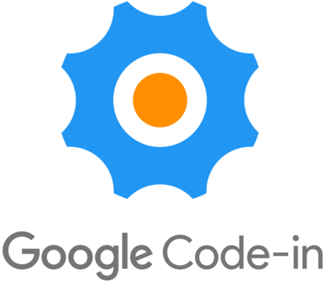

Google Code-in

OpenWISP is a mentoring organization for the Google Code-In 2017.
If you are reading this page you are probably considering OpenWISP as a possible mentoring organization for the Google Code-In, that’s great!
If you are looking for a friendly community where your contribution will have a very tangible positive effect from the first day of your participation and where you can grow your tech skills at 360°, then CONGRATULATIONS! OpenWISP is the right organization for you.
¶How to run a successful GCI

Have you read the contest rules yet? If not, please do!
The most important thing to keep in mind is that you may claim only one task at time and if you decide you don’t want to work on it anymore is totally fine but please communicate it to your mentors and remove yourself from the task on the Google Code-In dashboard so that someone else will be able to work on it.
Communication with the rest of the community is vital for a successful Google Code-In, please join our communication channels, presenting yourself on the mailing list and on chat, tell us who you are, what your values are, what is attracting to OpenWISP and don’t be cold like a robot! Stay human :-).
¶How to become an OpenWISP Star
Here’s a few quick tricks you can use to become a star in our community:
- Read the founding values and goals of OpenWISP, are you on our side?
- Study and follow closely the contributing guidelines.
- Be patient in the interaction with your mentors, we are all volunteers, we are taking our time to mentor you from our free time which we usually spend with our family and loved ones.
- We know our documentation is incomplete and fragmented, we are working hard to improve it, if you find a passage that is not clear or you have an idea about how to improve it, please let us know!
- The same happens with the software, if you see something which looks like a bug, reach out, even if it’s not a bug your feedback will help us to improve.
- If we ask you to open an issue in one of our github repository, please take at least 5 minutes of time to write a proper bug report.
- Watch the OpenWISP 2 presentation at the recent OpenWRT Summit 2017 and read the slides of this more technical OpenWISP 2 talk.
- Try using OpenWISP in real use case scenarios (find out if there’s a free wifi community near your area), spend time reading its code, ask questions.
- Try to participate in the community, if a fellow member is in need of help and you know how to help him, please do so, we will reward you.
¶Time to Start Hacking
If you are not familiar with the following concepts and technologies yet, take the time to read these resources, they will help you to speed up and raise to the top!
- Programming languages and frameworks:
- Python (book)
- Django (official documentation)
- Lua (video tutorial)
- Shell (video tutorial)
- Javascript (tutorial)
- Networking concepts:
- Introduction to networking terminology
- Configuration management:
- Introduction to configuration management
- Writing Ansible playbooks
- Creating Ansible roles from scratch
¶FAQs
Please refer to the Google Code-in FAQs before participating.
Note
You can ask for help whenever needed, but please don’t copy someone else’s work. Google Code-in has zero tolerance policy regarding cheating and plagiarism. There are some tasks which require a creative mind like designing logos and T-shirts, which you need to do by yourself. Remember, learning is more important than winning.
We wish you good luck for the contest!